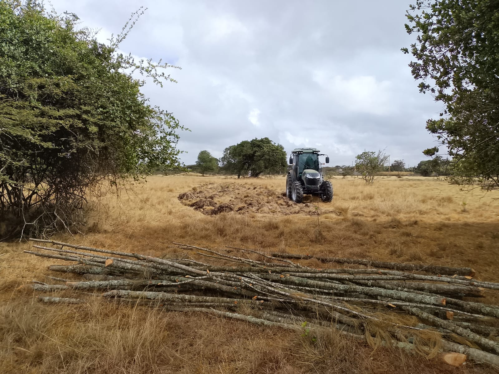
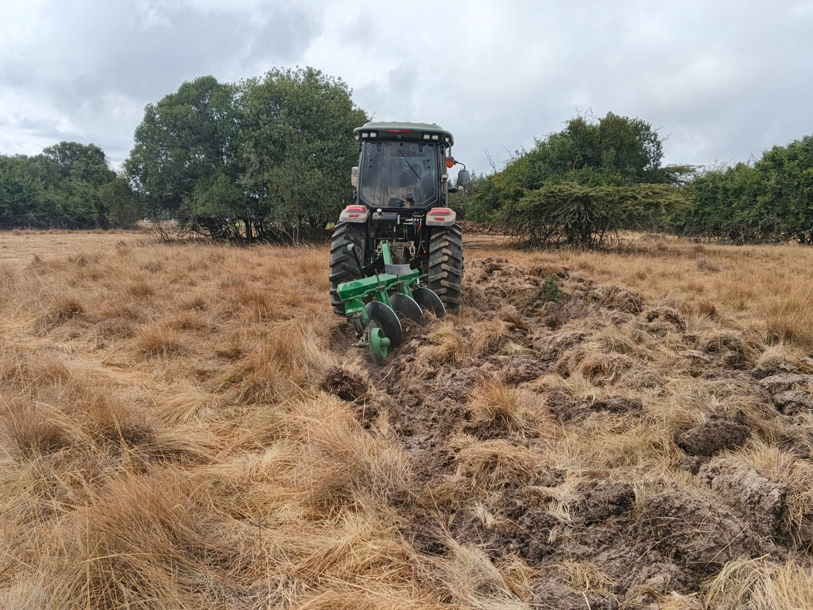
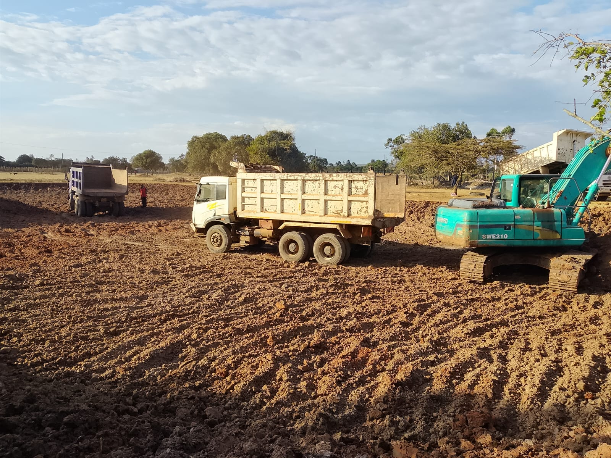
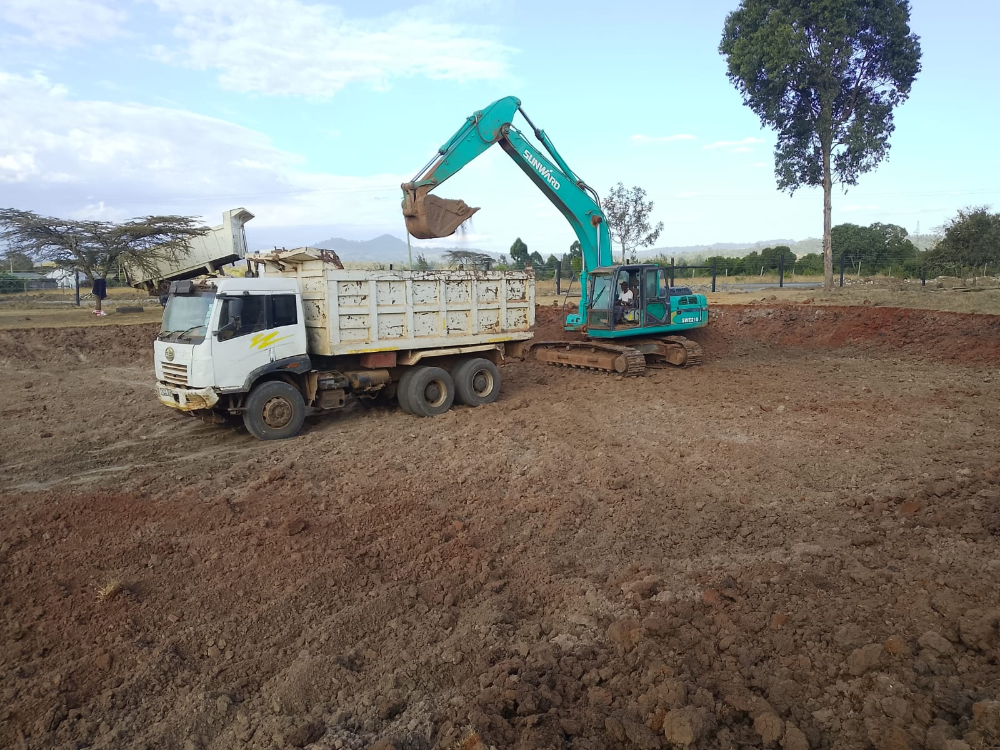
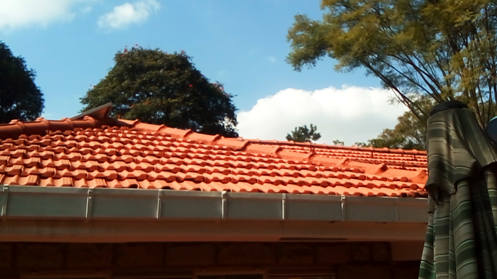

1. Mucheru World of Golf
Green trenching, topsoil stripping, tractor fuelling, soil haulage to tee boxes, and Dam 1 completion
- Trenching Operations: Work crews hand-dug sub-surface drainage trenches on Green Number 2 and Green Number 3 throughout the day.
- Method: Workers used wheelbarrows and hand tools (shovels, pickaxes) to excavate trench lines along the pre-marked chalk grid established on 9th August.
- Progress: Multiple intersecting trenches visible on both greens, following the perpendicular grid pattern for sub-surface irrigation and drainage.
- Topsoil Stripping: The Lima 904 tractor was deployed to strip and remove the topsoil layer on Greens 15, 14, 16, 17 & 13 to prepare for sub-surface works.
- Status: Greens 15, 14, 16 and 17 topsoil stripping has been completed. Green 13 stripping is yet to be completed — work will carry over to the next day.
- Tractor Fuelling: The Lima 904 tractor was fuelled to full tank to support continuous topsoil stripping operations throughout the day.
- Tee Box Soil Distribution: Excavated soil was transported and dumped on Tee Boxes 15, 16, 17, 7, and 18.
- Trip Count: Each tee box received approximately 10 trips of soil. Total haul: 54 trips completed across 5 tee boxes.
- Operating Hours: 🕐 Start 9:15 AM — Stop 6:15 PM | Total: 9 Hours
📹 Excavation & Loading Video Documentation
- Milestone Achieved: Dam 1 excavation has been completed (100%). The main basin pit has been fully excavated to the required depth.
- Next Steps: Awaiting shaping of the dam walls and scraping the bottom soil down to murram level to create a stable, impervious base for water retention.
✅ Dam 1 Excavation — 100% Complete
Excavation phase finished. Next phase: wall shaping and bottom preparation to murram level.
📷 Golf Project Visual Documentation

Green 2 Trenching in Progress
Work crew with wheelbarrows digging intersecting drainage trenches along chalk-marked grid lines on Green 2.

Green 2 Trench Grid Pattern
Wide view showing central trench with perpendicular cuts, wheelbarrows staged across the prepared green surface.

Green 3 — Drainage Trench Detail
Straight-line trench cut on Green 3 with chalk guide marks visible, surrounded by fenced boundary and acacia trees.

Topsoil Stripping Oversight
Site supervisor overseeing the Lima tractor stripping topsoil on green areas, dust cloud visible from active earthworks.

Tractor Topsoil Removal — Wide View
Lima 904 tractor ploughing and turning topsoil on green area, exposing dark earth layer beneath dry grass surface.

Lima 904 Tractor Fuelling
Three-man crew refuelling the green Lima 904 tractor from a blue drum in the field between operations.

Fuel Tank Cap — Full Tank Confirmed
Close-up of the tractor's fuel filler cap showing green diesel visible at brim level after full tank refuelling.

Stripped Topsoil — Green Area
Large area of topsoil stripped and turned, exposing dark subsoil layer with soil stockpile mounds in background.

Stripped Topsoil — Panoramic View
Expansive view of completed topsoil stripping across multiple green sections with red earth mounds visible beyond.

Tractor on Stripped Field
Wide landscape view of stripped field with tractor positioned among scattered acacia trees and cleared earth.

Active Topsoil Stripping
Lima tractor working through dry savanna grassland, stripping topsoil with mountains visible in the background.

Stripping Progress — Wide Field View
Distant view of tractor stripping operations with partially turned earth bordering untouched dry grass sections.

Topsoil Stripping — Alternate Angle
Tractor returning for another pass through the green area, breaking through the dry grass and compacted topsoil.

Soil Dumped on Tee Box Area
Large mounds of red and dark excavated soil deposited at tee box location among scattered acacia trees.

Tee Box Soil Stockpile
Red laterite earth stockpiled at tee box target area, visible through tree canopy on dry grassland terrain.

Dam 1 Basin — Completed Excavation
Wide view of the fully excavated dam basin with exposed red murram and dark subsoil layers visible in the pit.

Dam 1 — Sunward SWE210 in Pit
Teal Sunward SWE210 excavator working inside the completed dam basin during evening operations at dusk.

Excavation & Truck Loading
Two dump trucks (white and blue) positioned at dam floor as Sunward SWE210 excavator loads excavated soil.

Active Loading — SWE210 & Tipper
Sunward SWE210 bucket raised above white tipper truck dumping red earth, another truck tipping in background.

Excavator Loading — Close-Up
Sunward SWE210 excavator hoisting full bucket above white tipper truck at the dam excavation site.
.jpeg)
Excavator at Dam Edge
Sunward SWE210 excavator positioned at dam pit edge with blue tipper truck, scraping basin perimeter.

Dam Basin Active Excavation
Sunward excavator digging in the main dam pit with red dust plume, blue tipper truck positioned for loading.
.jpeg)
Dam Basin — Excavation Depth
Sunward excavator in deep basin dropping earth from full bucket, with tipper trucks staged on the rim above.
2. Chaka Farms — Livestock, Canine & Compound Operations
Dairy production, veterinary care, kennel management, obedience training, compound maintenance, and pet feeding
- Milking Yield Log: Daily milk collection recorded across morning and evening milking sessions.
| Session | Morning | Evening | Total Daily Yield |
|---|---|---|---|
| Milk Yield | 4 Litres | 3 Litres | 7.0 Litres |
⚠️ Calf Health Alert — Tonsil Infection
The veterinarian visited and treated 2 calves that were diagnosed with a tonsil infection. Medication was administered on site, and the calves are under observation for recovery.
- Kennel Sanitation & Hygiene: All kennels were thoroughly cleaned, washed, and prepared.
- Kennel Manners: Daily discipline, behavior enforcement, and in-kennel etiquette routines conducted.
- Obedience Training Commands:
- Sit, Paw & Spin Commands: Focused command drills for body control and coordination.
- Patience & Obedience: Good response noted across all dogs during the training session.
- Off-Leash Walking & Socialization: Dogs walked off leash and socialized with goats and kids (baby goats) in the compound — positive interaction and behavioral control observed.
📹 Canine Training & Socialization Video Documentation
- Compound Cleanliness: General compound maintenance and cleanliness activities completed across the farm premises.
- Lawn Irrigation: Watering and irrigation of the lawn grass throughout the compound to maintain green coverage.
- Pet Care & Evening Feeding: Evening feeding and care for resident pets at Kabete Residence — dog Ajabu and cats Aiko & Reo.
📷 Kabete Residence Visual Documentation

Shelf Interior Staining — In Progress
Painter in full coveralls applying wood stain to interior panels of the outdoor storage shelf, paint cans ready.

Shelf Exterior Panel Painting
Painter reaching up to apply cedar stain on the shelf's side and fascia panels at the rear of the stone house.

Shelf Top Fascia — White Finish
Painter applying white paint to the top fascia trim above the timber-stained shelf panels, roof tiles visible.

Shelf Painting — Completed Result
Finished timber-stained storage shelf with warm cedar tones, white fascia top, resting on stone footings behind the main house.

Mazera Stone Slabs — Set Aside
Flat natural mazera stone slabs stacked neatly against the black metal railing, cleared from the fireplace area.

Fireplace Clearing — Workers Bagging Rubble
Two workers scooping debris, broken tiles, and cement waste from the circular fireplace pit into sacks for disposal.

Fireplace Debris Removal — Progress
Workers filling sacks with rubble and tile fragments as the circular masonry fireplace is cleared for workspace conversion.

Roof Tile Painting — On Roof
Painter positioned on the pitched roof applying final coats of terracotta paint, solar panels visible alongside.

Roof Tiles — Fresh Paint Finish
Ground-level view showing uniform vibrant orange-terracotta painted roof tiles above the stone-built main house.

Roof Tiles — Alternate Angle
Close-up angle of freshly painted terracotta roof tiles with the metal guttering system gleaming below.

Storage Tank Slab Chamber — Blockwork
Cut grey stone masonry walls rising on the storage tank slab chamber, steel reinforcement bars in position.

Aiko & Reo — Evening Dinner
Calico and white-patched cats eating from metal bowls on the terracotta-tiled veranda at feeding time.

Ajabu — Evening Dinner
Golden-furred dog eating from a white bowl on the polished floor inside the house during evening feeding.
4. Amani Cottage — Gardening, Security & Grounds
Garden planting & pruning, CCTV installation, wildlife exclusion netting, and drone aerial survey
- Grass Planting: Ongoing grass planting and lawn establishment around the cottage grounds, with freshly prepared soil beds bordering established green lawn.
- Tree Pruning: Pruning of trees and shrubs across the cottage landscape, improving sight lines and managing overgrowth near paths and structures.
- Garden Bed Preparation: Succulent and ornamental plants being established in rock-bordered garden beds alongside the cottage pathways.
- Security Enhancement: Two (2) CCTV cameras were installed at Amani Cottage to strengthen perimeter surveillance and security monitoring of the property.
- Protective Mesh Fencing: Green wildlife exclusion mesh netting was set up around young plants and crop areas to prevent damage from roaming antelopes and zebras.
- Method: Groundskeeper installed green plastic diamond-mesh netting around tree bases and planting zones, secured with stakes into the lush cottage lawn.
- Purpose: The netting acts as a physical barrier to protect crops and newly planted vegetation from browsing and trampling by local wildlife.
- Drone Testing: Aerial drone survey testing was conducted at Amani Cottage grounds, capturing aerial footage of the property for site documentation and security monitoring assessment.
📹 Amani Cottage Video Documentation
📷 Amani Cottage Visual Documentation

Amani Cottage — Front Elevation
Beautiful stone-and-timber cottage with rustic log balcony railing, wicker swing chair, lush green lawn and stepping stones.

Amani Cottage — Garden Pathway
Stone-clad cottage with large glass windows, timber balcony overhead, surrounded by mature trees and manicured lawn.
.jpeg)
Cottage Woodland Garden & Log Store
Dappled light through native trees revealing the rustic log store with stacked firewood, bromeliads and green undergrowth.

Wildlife Exclusion Netting Installation
Groundskeeper in green uniform securing green diamond-mesh netting around tree base to protect plants from antelopes and zebras.

Garden Bed — Ready for Planting
Freshly prepared soil bed with small succulents and jade plants bordering rock-edged garden bed alongside the green lawn.